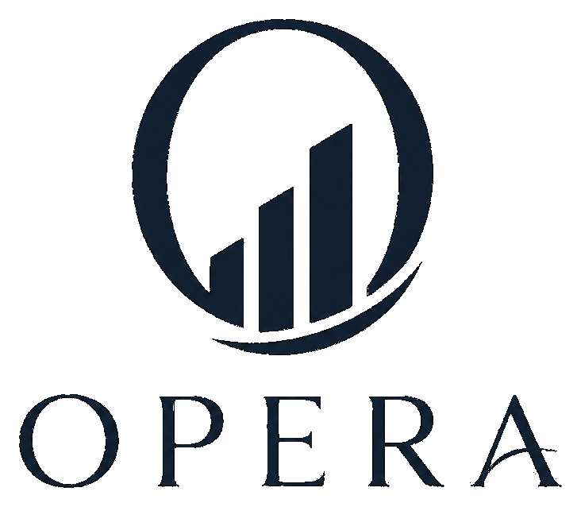

Living Operating Rights
On-chain authority over asset operations. Yield, transfer price, and listing status move with the holder’s live compliance score.

Opera manages who is allowed to operate a tokenized real-world asset — and updates that authority when compliance changes.
Existing RWA platforms stop at issuance. Opera models everything after — who may manage the asset, collect from it, distribute revenue, and whether that authority is still valid.
The core instrument is a Living Operating Right (LOR): programmable authority over asset operations, continuously repriced by the holder’s Cleanverse compliance score. Compliance is not a gate — it is the pricing engine.
Example: a Singapore family office tokenizes a solar farm and hires a maintenance company to run it and collect energy revenue.
Same event — operator sanctioned
Most RWA platforms only track ownership. Opera tracks who is currently allowed to operate the asset, and ties that permission to live Cleanverse compliance.
On-chain authority over asset operations. Yield, transfer price, and listing status move with the holder’s live compliance score.
CVI-verified operators deploy Cleanverse agents to bid for mandates, stake CVA as a compliance bond, and execute autonomously.
A continuous index of LOR prices — the first market-determined valuation of compliance quality across an asset class.
Opera uses Cleanverse for identity, assets, compliance checks, and agent execution. It runs on Monad for fast score updates and settlement.
Tenure, revocation, and jurisdiction feed the score that continuously reprices LORs.
Sole settlement and stake instrument — clean-money origination by construction.
Score input, transfer validation, and Travel Rule data on every value move.
Execution runtime of the Mandate Market — principal verification, spend caps, audit trail.
Configure score bands, mandate rules, simulate degradation, export CCP reports.
End-to-end CVA cash flows with fiat on/off ramps that never break the compliance chain.
When an operator’s compliance changes, their authority updates with it.